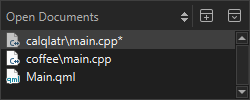

Open Documents
Shows currently open files.

You can use the context menu to apply some of the functions also available in the File menu and in the File System view to the file that you select in the view.
In addition, you can:
- Copy the full path of the file or just the filename to the clipboard.
- Pin files to the top of the list to keep them open when you select Close All.
- Assign keyboard shortcuts for opening the next and previous document in the list (OpenNextDocument and OpenPreviousDocument).
Setting Preferences for Opening Files
To set preferences for opening files and handling open files, select Preferences > Environment > System:

- In the When files are externally modified field, select whether you want to be prompted to reload open files that were modified externally. For example, when you pull changes from a version control system.
- Select Auto-save modified files to automatically save changed files at the intervals specified in the Interval field.
- Select the Auto-save files after refactoring check box to automatically save refactored files.
- Select the Auto-suspend unmodified files check box to automatically free the resources of open files after prolonged inactivity. The files are still listed in the Open Documents view. Set the minimum number of files that should be kept in memory in the Files to keep open field.
- Select Warn before opening text files greater than to receive warnings about opening big text files.
- In the Maximum number of entries in "Recent Files" field, set the number of recently opened files listed in File > Recent Files.
See also Apply quick fixes, Assign keyboard shortcuts, Rename symbols, and Find symbols.